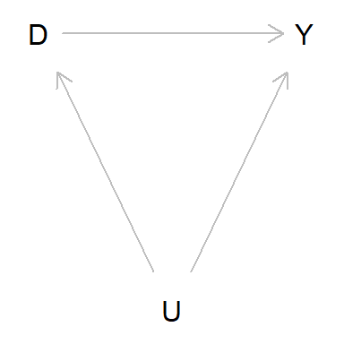
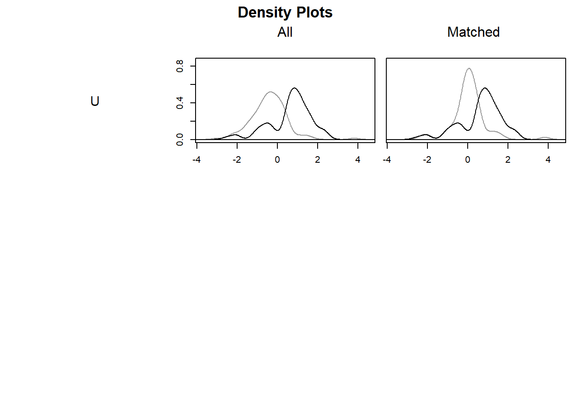
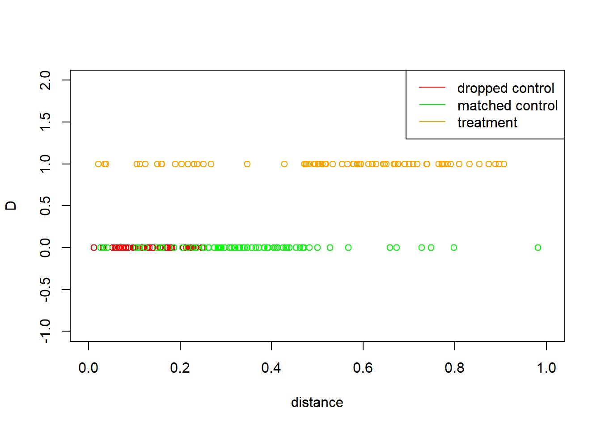
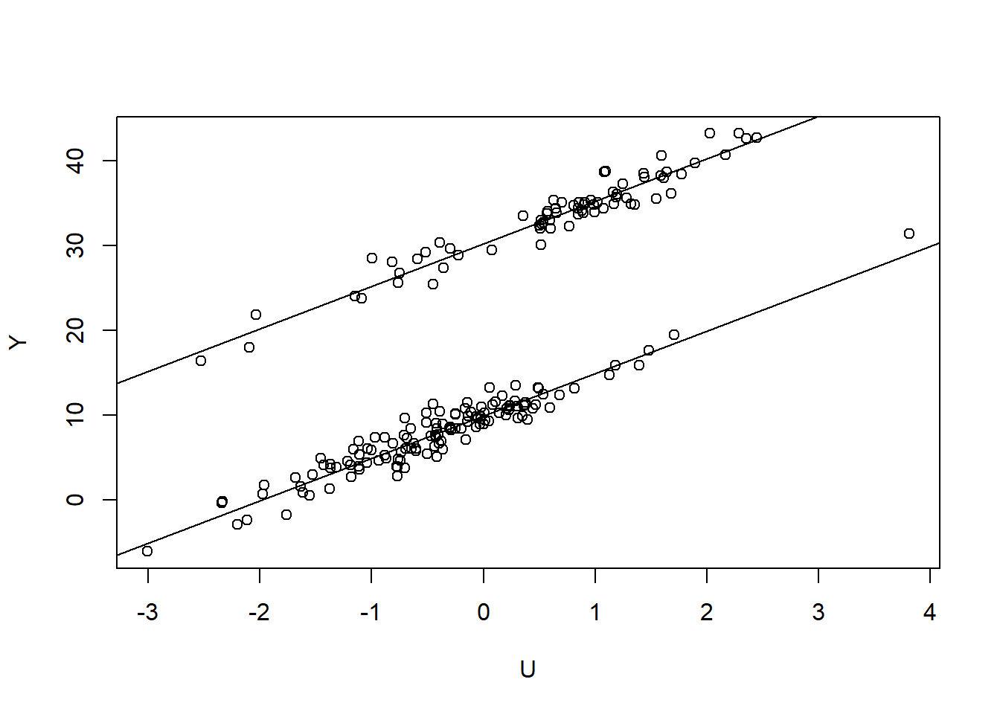

Generate simulated data from simple causal structures, analyze the data using adjusted and non-adjusted formulas. Also apply causal discovery using bnlearn.
Pearl, J., Glymour, M., & Jewell, N. P. (2016). Causal inference in statistics: A primer. John Wiley & Sons.
Huber, M. (2023). Causal analysis: Impact evaluation and Causal Machine Learning with applications in R. MIT Press.
Huntington-Klein, N. (2021). The effect: An introduction to research design and causality. Chapman and Hall/CRC.
Chernozhukov, V., Hansen, C., Kallus, N., Spindler, M., & Syrgkanis, V. (2024). Applied causal inference powered by ML and AI. arXiv preprint arXiv:2403.02467.
Angrist and Pischke (2009), Mostly Harmless Econometrics
Brumback (2022), Fundamentals of Causal Inference with R
Chatton, A., & Rohrer, J. M. (2024). The causal cookbook: Recipes for propensity scores, g-computation, and doubly robust standardization. Advances in Methods and Practices in Psychological Science, 7(1), 25152459241236149.
2 Simple chain
Simple causal chain: D->Y. We want to estimate the causal effect of D on Y.
Treatment selection bias (Confounder) : D->Y, U->D, U->Y. In order to estimate the causal effect of D on Y, we need to close the back door path D<-U->Y. Condition on U to estimate the causal effect. Pearl book, p. 62. Or as in, Angrist and Pischke (p. 57), this is the unconditional average effect obtained by averaging all the X-specific effects weighted by the marginal distribution of X_i.
When trying to find the causal effect of X on Y, we want the nodes we condition on to block any “backdoor” path in which one end has an arrow into X, because such paths may make X and Y dependent, but are obviously not transmitting causal influences from X, and if we do not block them, they will confound the effect that X has on Y.We condition on backdoor paths so as to fulfill our first requirement. However, we don’t want to condition on any nodes that are descendants of X. Descendants of X would be affected by an intervention on X and might themselves affect Y; conditioning
We search for an observed variable that fits the backdoor criterion from D to Y. A brief examination of the graph shows that U, which is not a descendant of D, also blocks the backdoor path D ← U → Y. Therefore, U meets the backdoor criterion. So long as the causal story conforms to the graph. adjusting for U will give us the causal effect of D on Y. Using the adjustment formula, we find
\[ P(Y=y|do(D)) =\sum_U P(Y=y|D=d,U=u) P(U=u) \]
and the average treatment effect (ATE) is
\[ ATE= P(Y=y|do(D=1)) - P(Y=y|do(D=0)) \]
When confounder is continuous use regression
\[ y = \beta_0+\beta_D D +\beta_U U +\epsilon \] then the estimated \(\beta_D\) is the causal effect of U on Y. Angrist and Pischke (p. 55) : regression can be seen as a matching estimator, capturing an average causal effect, much as the adjustment formula does.
Code
g <-dagitty('dag {D [pos="0,.1"]Y [pos=".2,.1"]U [pos=".1,.2"]D -> Y D <-U -> Y }')plot(g)

3.1 Simulated data
Code
set.seed(1)n=200sd1=1.5sd2=1sdU=1e1=rnorm(n,0,sd1)e2=rnorm(n,0,sd2)U=rnorm(n,0,sdU)#D=ifelse(U>0.5,1,0)p.overlap=0.1D=ifelse(U>0.5,ifelse(runif(n)>p.overlap,1,0),ifelse(runif(n)>p.overlap,0,1))rho=20Y=10+rho*D+5*U+e1# effect of D with no adjustmenty1=Y[D==1]y0=Y[D==0]print('non-adjsted ATE')
[1] "non-adjsted ATE"
Code
(ate.nonadjusted=mean(y1)-mean(y0))
[1] 25.68462
Code
print('check whether x is balanced. mean of U with D=0 and mean of U with D=1')
[1] "check whether x is balanced. mean of U with D=0 and mean of U with D=1"
3.2 match data manually and do regression adjustment
THIS DOES NOT SEEM TO BE MAKING TOO MUCH DIFFERENCE OVER SIMPLE CONTROLLING APPROACH. SEE RANDOM ASSIGNMENT SECTION, IN WHICH MATCHING PROVIDES BIGGER IMPROVEMENT.
Code
#ind0=which(D==0)ind1=which(D==1)ind.match0=ind0[U[D==0]<.25&U[D==0]>-0.75]ind.match1=ind1[U[D==1]<.25&U[D==1]>-0.75]print('means of matched covariates')
A `matchit` object
- method: 1:1 optimal pair matching
- distance: Propensity score
- estimated with logistic regression
- number of obs.: 200 (original), 142 (matched)
- target estimand: ATT
- covariates: U
Code
plot(m_out, type ="density")

Code
m_data <-match.data(m_out,drop.unmatched =TRUE)print(paste0('total of ', dim(m_data)[1], ' matched data. 1:1 matching, thus, number of controls = treatment = ', dim(m_data)[1]/2))
[1] "total of 142 matched data. 1:1 matching, thus, number of controls = treatment = 71"
Code
# check matched points. to compare to the original data, don't drop unmatchedm_data_keep<-match.data(m_out,drop.unmatched =FALSE)ind_control_match=m_data_keep$D==0&!is.na( m_data_keep$subclass)n_control_match=length(which(ind_control_match))ind_control_drop=m_data_keep$D==0&is.na( m_data_keep$subclass)n_control_drop=length(which(ind_control_drop))ind_treat=m_data_keep$D==1n_treat=length(which(ind_treat))plot(D~distance,m_data_keep[ind_control_drop,],xlim=c(0,1),ylim=c(-1,2),col='red')points(D~distance,m_data_keep[ind_control_match,],col='green')points(D~distance,m_data_keep[ind_treat,],col='orange')legend('topright',legend=c('dropped control','matched control','treatment'),col=c('red','green','orange'),lty=c(1,1,1))

Code
# fit model lm.matched2=lm(Y~D+U,m_data)(coef(lm.matched2)["D"])
A `matchit` object
- method: Coarsened exact matching
- number of obs.: 200 (original), 197 (matched)
- target estimand: ATT
- covariates: U
Code
plot(m_out_cem, type ="density")
Code
m_data_cem <-match.data(m_out_cem,drop.unmatched =TRUE)# fit model lm.matched3=lm(Y~D+U,m_data_cem,weights = m_data_cem$weights)(coef(lm.matched3)["D"])
3.5 Estimate ATE using g-computation (see Chatton cookbook, or Brumback Ch 6.1.2 )
Code
df$D=factor(df$D)e <-glm(D~U, data = df, family=binomial)$fitted.valuesomega <-ifelse(df$D==1, 1/e, 1/(1-e))summary(omega)
Min. 1st Qu. Median Mean 3rd Qu. Max.
1.027 1.205 1.422 2.537 1.765 52.948
Code
# Linear model returns the ATE (risk difference)msm_RD <-lm(Y~D, weights = omega, data=df)msm_RD$coef[2]
D1
12.51548
Code
# Fit a logistic regression model predicting Y from the relevant confoundersQ <-lm(Y ~ D+U, data = df)A1Data <- A0Data <- df# In one world A equals 1 for everyone, in the other one it equals 0 for everyone# The rest of the data stays as is (for now)A1Data$D <-factor(1); A0Data$D <-factor(0)Y_A1 <-predict(Q, A1Data, type="response") # Predict Y if nobody attendsY_A0 <-predict(Q, A0Data, type="response") # Taking a look at the predictionsdata.frame(Y_A1=head(Y_A1), Y_A0=head(Y_A0), TRUE_Y=head(df$Y)) |>round(digits =2)
# Mean outcomes in the two worldspred_A1 <-mean(Y_A1); pred_A0 <-mean(Y_A0)# ATE (risk difference)RD_gcomp <- pred_A1 - pred_A0print(RD_gcomp)
[1] 20.35746
3.6 Estimate ATE using regression and Huber book p. 79.
Code
lm.ate=lm(Y~U+D)summary(lm.ate)
Call:
lm(formula = Y ~ U + D)
Residuals:
Min 1Q Median 3Q Max
-3.2410 -0.9171 -0.1387 0.8733 3.6790
Coefficients:
Estimate Std. Error t value Pr(>|t|)
(Intercept) 9.9298 0.1300 76.38 <2e-16 ***
U 5.0140 0.1047 47.87 <2e-16 ***
D 20.3496 0.2336 87.10 <2e-16 ***
---
Signif. codes: 0 '***' 0.001 '**' 0.01 '*' 0.05 '.' 0.1 ' ' 1
Residual standard error: 1.39 on 197 degrees of freedom
Multiple R-squared: 0.9891, Adjusted R-squared: 0.989
F-statistic: 8969 on 2 and 197 DF, p-value: < 2.2e-16
Code
print('adjusted ATE')
[1] "adjusted ATE"
Code
(ate.adjusted1=coef(lm.ate)["D"])
D
20.34961
Code
#1.fit separate modelslm.ate1=lm(Y~U,subset=(D==1))lm.ate0=lm(Y~U,subset=(D==0))n1=sum(D==1)n0=sum(D==0)mu1=coef(lm.ate1)[1]mu0=coef(lm.ate0)[1]plot(Y~U)abline(lm.ate1)abline(lm.ate0)

Code
print('using the adjustment formula with two treatment values-difference in means gives incorrect result')
[1] "using the adjustment formula with two treatment values-difference in means gives incorrect result"
Code
(ate.adjusted2=mu1-mu0)
(Intercept)
20.34738
Code
#2. propensity score approach - see Huber p. 113#mean(fitted(lm.ate1))-mean(fitted(lm.ate0))propen.scores=glm(D~U, family=binomial)$fitb00=coef(lm.ate0)[1];b01=coef(lm.ate0)[2];b10=coef(lm.ate1)[1];b11=coef(lm.ate1)[2];mu0x=b00+b01*U;mu1x=b10+b11*Udelx=mu1x-(mu0x)+(Y-mu1x)*D/propen.scores-(Y-mu0x)*(1-D)/(1-propen.scores)(ate.propen=mean(delx))
[1] 19.55496
Code
#3. fit one modelypred1=predict(lm.ate,newdata =data.frame(D=rep(1,n),U=U))ypred0=predict(lm.ate,newdata =data.frame(D=rep(0,n),U=U))print('using the adjustment formula with two treatment values')
[1] "using the adjustment formula with two treatment values"
Code
(ate.adjusted2=mean(ypred1)-mean(ypred0))
[1] 20.34961
3.7 Partialling out approach
Chern book (see p. 35) analyze wage gap notebook. This can be applied via lasso when U is high dimensional (see DML method for gun ownership in Chern book p.260)
Note that DML requires being able to accurately model the “outcome process,” i.e. the conditional expectation function E[𝑌 | 𝐷, 𝑋]. When the outcome process is hard to model, we might need to use propensity score (see Chern book, 5.3 Identification Using Propensity Scores and Chern book Ch 14.)
Further (from Chern book 5.2 Identification by Conditioning): the overlap assumption requires that there is proper randomization or variation in 𝐷 at each value 𝑥 in the support of 𝑋. Without this condition, there are values 𝑥 in the support of 𝑋 where we cannot construct a contrast between treatment and control units.The conditional probability of receiving treatment, the propensity score, plays an important role in this approach.
Code
# model for Yflex_y <- Y~U# model for Dflex_d <- D~U# partialling-out the linear effect of D from Yt_y <-lm(flex_y)$res# partialling-out the linear effect of U from Dt_d <-lm(flex_d)$res# regression of Y on D after partialling-out the effect of Upartial_fit <-lm(t_y ~ t_d)partial_est <-summary(partial_fit)$coef[2]
3.8 Discovery from the observed data
Following Huber (2024): To demonstrate the practical implementation of causal discovery algorithms in R, we load the bnlearn package (Huber, M. (2024). An introduction to causal discovery. Swiss Journal of Economics and Statistics, 160(1), 14.)
Code
library(bnlearn)df.yud=data.frame(Y,U,D)# run the PC algorithmoutput=pc.stable(df.yud,undirected =FALSE) #Constraint-Based Learning Algorithms#Note that even when undirected is set to FALSE there is no guarantee that all arcs in the returned network will be directed; some arc directions are impossible to learn just from data due to score equivalence# to install rgraphviz#install.packages("BiocManager")#BiocManager::install("Rgraphviz")plot(output)
See Chern book (p. 151) and Angrist and Pischke (p. 67) for some examples of collide bias, with formulas.
5 Posttreatment covariates (mediation)
Code
g <-dagitty('dag {D [pos="0,1"]Y [pos="2,1"]U [pos="1,2"]D -> Y D ->U -> Y }')plot(g)
simulated data.
Code
n=200sd1=1.5sd2=1sdU=1e1=rnorm(n,0,sd1)e2=rnorm(n,0,sd2)D=ifelse(runif(n)>0.5,1,0)#U=ifelse(D==1,rnorm(n,5,sdU),rnorm(n,10,sdU))U=10*D+e2Y=10+20*D+5*U+e1# check if covariate is balanced. mean(U[D==1])
[1] 9.873696
Code
mean(U[D==0])
[1] -0.09567112
Effect estimates: adjusted and non-adjusted. Here Huber and Pearl says not to adjust, but non-adjusted model yields weird estimates. Not clear what to do. See Pearl p. 75. Huber p. 69 says post treatment covariates are bad controls but does not say how we can estimate causal effect. Huntington-Klein (Chapter 8, p. 121) says that front door paths can be good path or bad path depending on our research question E.g., in Fig 8.3 there are two front door paths: Wine -> Lifespan and Wine->Drugs->Lifespan. If we are interested in the direct effect only we may classify indirect path as bad path and control for U to close that path. If we are interested in the total effect, we classify indirect path as good path and not control for U to keep that path open.
Code
lm.ate.PT=lm(Y~U+D)print('adjusted ATE. gives the direct effect (=20)')
[1] "adjusted ATE. gives the direct effect (=20)"
Code
(ate.adjusted1.PT=coef(lm.ate.PT)["D"])
D
20.35692
Code
lm.ate.PT.nonadjust=lm(Y~D)print('non-adjusted ATE. gives the total effect (=20+5*10)')
[1] "non-adjusted ATE. gives the total effect (=20+5*10)"
# Parameter estimates for full and simple model:beta.hat <-coef( lm.ate.PT )beta.hat.simple <-coef( lm.ate.PT.nonadjust )# Relation between regressors:delta.tilde <-coef( lm(U ~ D) )print('direct effect')
[1] "direct effect"
Code
beta.hat["D"]
D
20.35692
Code
print('indirect effect')
[1] "indirect effect"
Code
beta.hat["U"]*delta.tilde["D"]
U
49.52629
Code
print('total effect is the sum of the two, or from simple model')
[1] "total effect is the sum of the two, or from simple model"
Code
beta.hat.simple["D"]
D
69.88321
6 Random versus Non-Random assignment in regression and Matching
From Angrist and Pischke (p.22): analyze experimental data using regression to estimate causal effects. \[y=\alpha+\rho D+\gamma x+ \epsilon\] where \(y\) is test score, \(D\) is class size (small/large=1/0) and \(x\) is age in 1985.
For the non-random assignment case, \(D\) is a function of \(X\), thus the covariates are pre-treatment (i.e., X is a confounder).
Not balanced. Try to pick two groups with similar x. pick students with 5<x<5.5 under both D=0 and D=1
Code
ind0=which(D.nonrandom==0)ind1=which(D.nonrandom==1)ind.match0=ind0[x[D.nonrandom==0]<5.5&x[D.nonrandom==0]>5]ind.match1=ind1[x[D.nonrandom==1]<5.5&x[D.nonrandom==1]>5]print('means of matched covariates')
[1] "means of matched covariates"
Code
mean(x[ind.match0])
[1] 5.266722
Code
mean(x[ind.match1])
[1] 5.200394
Create matched data and fit the model with that data.
# fit model with CEM matched datam_out_cem <-matchit(D ~ x,data = df, method ="cem")m_data_cem <-match.data(m_out_cem,drop.unmatched =TRUE)lm.matched3=lm(y~D+x,m_data_cem,weights = m_data_cem$weights)(coef(lm.matched3)["D"])